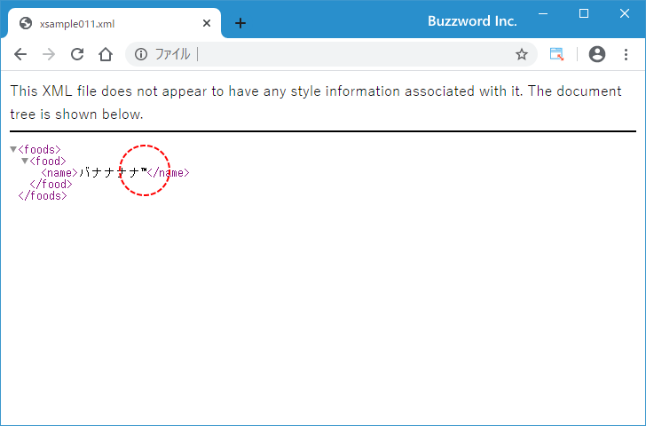
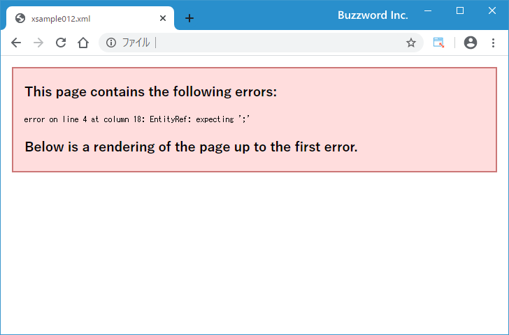

XMLにおける文字参照と実体参照
XML 文書の内容や属性の値などで特別な値を記述する場合に使用する文字参照と実体参照について解説します。
文字参照
キーボードから文字を直接入力する代わりに文字に対応する文字番号を使って文字を記述することができます。この方法を XML では文字参照と呼びます。文字番号は文字コードの一つである ISO 10646 で定められた文字コードを使用します。
例として次の XML 文書をみてください。
<?xml version="1.0" encoding="UTF-8" ?>
<foods>
<food>
<name>バナナナナ™</name>
</food>
</foods>
name 要素の内容として"バナナナナ"のあとに ™ という値が記述されています。これは商標記号の文字を文字参照を使って記述したものです。この XML 文書をブラウザで表示してみると ™ が記述されているところに代わりに商標記号の文字が表示されています。

文字参照は 10 進数または 16 進数の文字番号を使って次のように記述します。
&#(10進数の文字番号); &#x(16進数の文字番号);
例えば 10 進数で記述する場合は ᩝ のように記述し、 16 進数で記述する場合は ᩝ のように記述します。先ほどの例で商標記号を 10 進数の ™ と記述しましたが、 16 進数の ™ と記述しても同じ結果となります。
文字参照の一覧の中で文字と文字番号の対応表の一部を下記に記述します。すべて 10 進数ですので 16 進数で記述する場合は文字番号の部分を 16 進数に変換してください。
¥ 円記号 ¥ © 著作権表示文字 © ® 登録商標記号 ® ° 度記号 ° ¼ 1/4 ¼ ½ 1/2 ½ ¾ 3/4 ¾ ™ 商用記号 ™ ∑ シグマ ∑ √ ルート √ ∫ 積分 ∫
またこのあとで解説する実体参照で使われる文字についても文字参照で記述することができます。
& アンパサンド & < 小なり記号 < > 大なり記号 > " 二重引用符 " ' 一重引用符 '
実体参照
& や < など一部の特殊な文字については要素の内容にそのまま記述するとエラーになる文字があります。
例として次の XML 文書をみてください。
<?xml version="1.0" encoding="UTF-8" ?>
<foods>
<food>
<name>バナナ&リンゴ</name>
</food>
</foods>
name 要素の内容の中に「バナナ&リンゴ」と & を記述しています。この XML 文書をブラウザで表示してみると次のようにエラーが表示されます。

このようなエラーとなる文字に関しては先に解説した文字参照を使って記述することもできますが、覚えにくい文字番号ではなく特別な文字列を使って記述することができます。この方法を XML では実体参照といいます。先ほどのサンプルの場合なら & と記述する代わりに実体参照の & と記述してください。
<?xml version="1.0" encoding="UTF-8" ?>
<foods>
<food>
<name>バナナ&リンゴ</name>
</food>
</foods>
この XML 文書をブラウザで表示してみると今度は正常に表示されました。

XML で実体参照が用意されているのは次の 5 つだけです。( HTML の場合は他にもありますが XML の場合は 5 つだけです)。
& アンパサンド & < 小なり記号 < > 大なり記号 > " 二重引用符 " ' 一重引用符 '
& および < については要素の内容や属性の値として記述する場合など常に実体参照で記述する必要があります。それに対して " および ' については要素の内容に記述する場合はそのまま記述してもエラーとなりませんが属性の値として記述する場合には実体参照で記述する必要があります。
> については要素の内容の中で ]]> と記述する必要がある場合だけそのまま記述するとエラーとなりますので実体参照を使って ]]> と記述します。(ただエラーにならない場合も > については > と記述しておいた方がケアレスミスは少なくなるかもしれません)。
なお & および < についても、このあとで解説する CDATA セクションの中で記述する場合にはそのまま記述することができます。
-- --
XML 文書の内容や属性の値などで特別な値を記述する場合に使用する文字参照と実体参照について解説しました。
( Written by Tatsuo Ikura )

著者 / TATSUO IKURA
初心者～中級者の方を対象としたプログラミング方法や開発環境の構築の解説を行うサイトの運営を行っています。